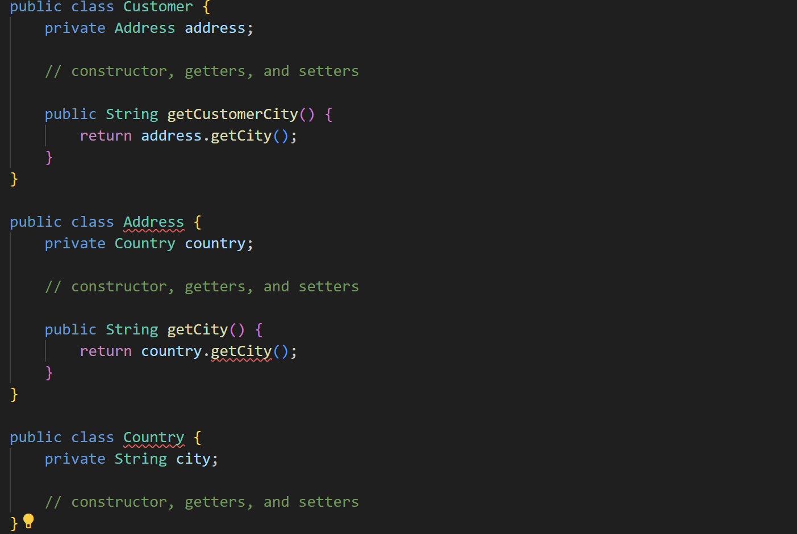

Smell dimana pada saat kita ingin mengakses suatu method, perlu memanggil method lain
Salah satu cara mengatasi message chains ini yaitu dengan “encapsulate the chains” dimana hal ini adalah membungkus rantai pesan dalam sebuah metode pada objek pertama dalam rantai. Hal ini membantu dalam meningkatkan enkapsulasi dan mengurangi ketergantungan antar objek-objek.
Contoh Code :
Before :

Dalam contoh ini, untuk mendapatkan nama kota pelanggan, kita harus melewati tiga objek: Customer -> Address -> Country. Ini adalah contoh dari "message chains".
After :
Dalam kode yang diperbaiki, kami telah menghilangkan kelas Country karena tidak ada lagi ketergantungan berantai. Sekarang, untuk mendapatkan nama kota pelanggan, kita hanya perlu melewati satu objek: Customer -> Address. Ini membuat kode lebih sederhana dan mengurangi ketergantungan yang berlebihan antar kelas.